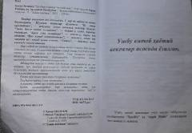

HBHayotdagi har bir uchrashuv taqdirning muqaddas qalami ekanligini ochib beruvchi kitob.
Turk yozuvchisi Hakan Mengüç tomonidan yozilgan ushbu kitob hayotdagi har bir uchrashuvning tasodif emasligini, balki taqdirning bir qismi ekanligini falsafiy va sufiyona nuqtai nazardan yoritadi. Muallif o'z hayotiy tajribalari orqali o'zlikni anglash, sinov va o'zgarishlar haqida fikr yuritadi. Kitob o'quvchini umid bilan yashashga va har bir tajribadan ma'no izlashga undaydi.